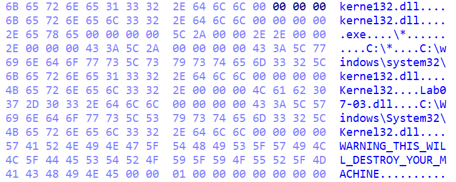
Detailed Malware Analysis: Fake Kernel32.dll
- 22/01/2025 -Reading time: 45 minutes
Table of Contents
→ Getting lost in the details: the strings comparison loop→ Stealing "kernel32.dll" with file mappings
→ The highest high-level overview so far: File manipulations with the file mappings of "kernel32.dll" and "Lab07-03.dll".
→ Finding the imposter: First encounter with "kerne132.dll".
→ The highest high-level overview in this lab: Investigating the start of the subroutine that searches for files in the C directory.
→ The first big block: The part of the subroutine that handles found .exe files.
→ The second big block: The part of the subroutine that searches within nested directories.
→ At the end of this subroutine: Finding the next file, the file finding loop.
→ The .exe pipeline: Investigating the subroutine that handles the found .exe files.
→ Conclusion
This was the first malware I’ve encountered so far that could not be diligently analysed line-by-line due to how long it would take. I had to look at the big picture and fill in the gaps with whatever else I could glean from its behaviour.
 This malware is part of the 3rd lab at the end of Chapter 7 of “Practical Malware Analysis” by A. Honig and M. Sikorski. All of the labs can be downloaded from the author here.
This malware is part of the 3rd lab at the end of Chapter 7 of “Practical Malware Analysis” by A. Honig and M. Sikorski. All of the labs can be downloaded from the author here.I use the free version of IDA for all of the analysis.
This analysis assumes that the reader is familiar with the concept of .exe files, .dll files, CPU registers, EAX being used for return values of functions, the stack, basic Assembly instructions and basic programming concepts such as strings, argc/argv, pointers and dereferencing, and file handles. I refer to specific lines of code by their address visible in the leftmost column, using the format “loc_address”.
This analysis consists purely of static analysis (analysing the Assembly code). In practice, dynamic analysis (running the malware in a sandbox and observing its behaviour) would normally be used as well.
I’m new to malware analysis and I can’t guarantee that all of the analysis below is completely accurate. If you notice any mistakes in my reasoning, please let me know.
This malware consists of two files: an .exe file, and a .dll file. The initial state of the DLL file is quite easy to analyse and it will not be the target of the following analysis. It’s enough to know that the behaviour of the DLL is as follows: it first checks that it’s the only copy running on this machine, then it connects to a remote server and receives commands from it.
Importantly, the .exe doesn’t import any functions from the DLL. The .exe file and the .dll file appear to be separate from each other, and it doesn’t seem that the .dll will automatically execute together with the .exe. This is suspicious, because usually when an .exe is shipped with a DLL file, the .exe will import at least some of the functions from the DLL.
Let’s now move onto the fun part that is analysing the .exe file.
We start by opening the .exe in IDA. Looking at the graph overview of the main function (see the image above), it looks pretty straightforward without too many branching statements. Inside the code and not visible on the graph will be jumps to a few subroutines (functions called within the main function) that we will encounter later on.
Getting lost in the details: the strings comparison loop
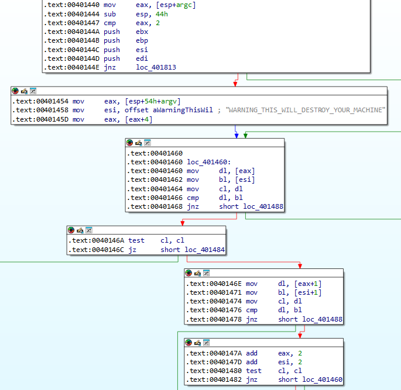Right at the start of the main function (the top box in the image above) we can see that the malware takes 2 arguments to run, because argc is compared to 2. The pointer to argc is stored in the EAX register in loc_401440, and EAX will be used to refer to argc until EAX will get overwritten with some other value later on. If this comparison of EAX/argc to the value of 2 turns out to be false, then the jump statement at loc_40144E (represented by the green line that is actually an arrow leading all the way down the graph) will take us all the way to loc_401813 which is the end of the program.
The first argument in a program is always the name of the executable, so we just need to know what the malware will accept as the second argument. The second argument is the only actual argument provided to the malware when it’s being run from the command line, as such:
“./malware_name.exe argument2”.
There’s 3 options of what a malware (or any program) will expect as the second argument:
(1) any value, for example a file name if the malware would be to create a file
(2) one value from a list of predefined options, for example if the malware has multiple modes of operation
(3) one specific value, for example a secret key necessary for the malware to execute.
In this case, we can venture a guess that it’s going to be option (3) with the value of “WARNING_THIS_WILL_DESTROY_YOUR_MACHINE” because it’s the only string we can see at the start of the program. But to convince ourselves (and because I’m trying to learn Assembly), let’s investigate what the program does with the second argument.
In the second box from the top, EAX is made to point to the second argument. How do we know that? In loc_401454, EAX is made to contain the address of argv. Argv is the array of pointers to all the arguments provided to the program (in this case two). The address of any array is also the address of the first element in the array, so at this point EAX contains the address of the first argument. Then loc_40145D moves EAX to point 4 bytes later, which is the address of the second argument since each address takes up 4 bytes of space. Therefore EAX points to the second argument.
ESI points to the warning string “WARNING_THIS_WILL_DESTROY_YOUR_MACHINE”, as we can see in loc_401458.
Then at loc_401460, EAX and ESI (or rather, the values that EAX and ESI are pointing at, since the square brackets indicate dereferencing pointers) are moved into DL and BL registers respectively. DL and BL can only hold 1 byte - so the whole of EAX and ESI will not fit inside of them. Therefore, effectively, only the first byte of EAX and ESI will be moved inside DL and BL. EAX and ESI contain the two argument strings, and one letter in a string takes up one byte, therefore this will result in the first letter/byte of each argument being moved inside DL and BL. We can now imagine how this string comparison will take place - by comparing them letter by letter, or byte by byte.
At loc_401464, DL is copied into CL. Therefore, the first letter of the second argument is stored in 2 places. This will come in handy later on, when the code will be checking for the end of string to know when to finish the comparison.
At loc_401466, the first letter of the second argument and the first letter of the warning string are compared. If they are equal (that is, the result of the comparison returns 0), we follow the red arrow to the fourth box from the top. If they are not equal, we follow the green arrow which leads to the end of the program.
At loc_40146A, we can see “test CL, CL” which is equivalent to “CL + CL”. If the result of this equals zero (jz = jump if zero), the code follows the green arrow which leads to the rest of the program. Otherwise the program continues with the string comparison. CL + CL will only equal zero if CL itself is zero. The end of any string is delineated by a null (zero) character, therefore CL will only equal zero once the malware iterates through all of the letters of the second argument and reaches the end of the string.
For now, we’re only at the beginning of the string and CL + CL doesn’t return zero, so we follow the code by taking the red arrow into loc_40146E. There, the values at EAX+1 and ESI+1 are moved into DL and BL registers. This is the same as what happened at loc_401460, only this time the malware is moving the 2nd byte of each of the registers (that is the second letter) rather than the 1st.
We can again see the comparison between the letters, and then the value of 2 is added to EAX and ESI. This will increase each address by 2 bytes, so each address will now point to the value of the 3rd character in each string. We might wonder why we add 2 rather than 1, since we have already added 1 at loc_40146E and loc_401471 and we only want to proceed to the next character. However, at loc_40146E and loc_401471 the code was simply dereferencing the values of EAX+1 and ESI+1 (the dereference operation is represented by the square brackets). The dereference operation didn’t change the values in the registers, whereas the add operation does.
After the addition, the code again executes “test CL, CL” to check for the end of the string, and if the end of the string is not found, the code follows the green arrow that leads back up to the third box from the top. Therefore, this is a loop that compares the second argument with the warning string letter by letter, until either a mismatch is found and the program exits, or the end of the argument string is found and the execution can finally continue to the rest of the program.
Stealing "kernel32.dll" with file mappings
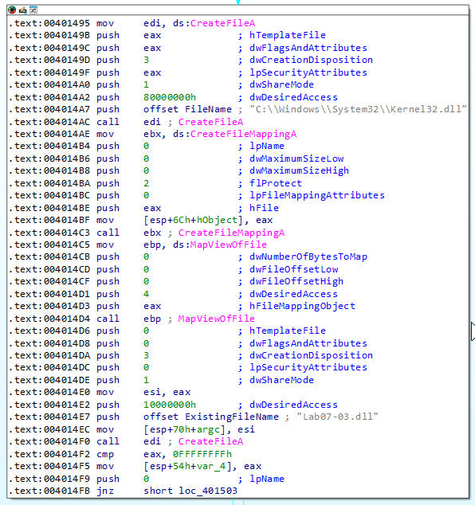The above is the code that will execute if the malware was provided with the correct second argument (equal to “WARNING_THIS_WILL_DESTROY_YOUR_MACHINE”).
In the code, we can see several call instructions that call Windows functions, labeled by IDA with the pink comment text. The calls are implemented in a strange way, because instead of just opting for “call FunctionName”, the program first moves the function name into a register (e.g. “mov EDI, ds:FunctionName”) and only then calls it using the value stored in the register (e.g. “call EDI”). IDA adds a comment next to the register calls to indicate which function name was stored in that register. I’m unsure as to the purpose of this seemingly roundabout way of function calls. As with most unusual things I encounter in Assembly, I assume that it somehow improves performance.
The function calls are separated by lots of push statements which push onto the stack the arguments for these functions. The stack is cleared after each of these functions return (clearing of the stack happens within the called functions themselves, so we can’t see it here). Therefore, we know that to see what arguments were provided to each of these functions, we only need to look at the push statements located before the call to this function and after the call to the previous function. IDA knows what arguments are accepted by these Windows functions, and we can see that she added comments (blue text) next to the push statements to label each of the function arguments.
With that, we can make a high-ish level overview of what this code does. We won’t focus on every individual argument passed to the functions since they mostly seem to be default arguments that specify attributes irrelevant to us such as flags and share mode.
The first call is to "CreateFileA” with the filename of kernel32.dll located in its original System32 directory. Based on the function name this would appear to create a new file, but since the file name we’re trying to create already exists (“kernel32.dll” is a known Windows library), my guess is that this will result in the function simply opening the existing file. In the function documentation, the argument “dwCreationDisposition” looks to be related to this behaviour of whether the function will open an existing file or attempt to create a new one. In our case “dwCreationDisposition” is equal to 3 which translates to “Opens a file or device, only if it exists”. Therefore, the misleadingly named function "CreateFileA” will open the kernel32.dll file and return its handle (stored in EAX, at least for now - EAX will be overwritten by other return values from the functions called later on).
The second call is to “CreateFileMappingA” which acts on the “kernel32.dll” file handle that we opened with "CreateFileA” (you can see the handle being passed as an argument to “CreateFileMappingA” when EAX, which at this point still stores the return value of the "CreateFileA” function, is pushed onto the stack at loc_4014BE). The function “CreateFileMappingA” will create a file mapping of “kernel32.dll”. The file mapping will make the code of “kernel32.dll” accessible to our malware later on.
The third call is to “MapViewOfFile”, and again the return value of the previous function (“CreateFileMappingA”) is passed as one of the arguments. Based on my shaky understanding of the documentation, “MapViewOfFile” appears to take the file mapping of “kernel32.dll” created by “CreateFileMappingA” and make it available in the memory of the executing malware. Essentially, at this point our malicious program should be able to access the code of “kernel32.dll”.
The fourth call is to "CreateFileA” again, this time with “Lab07-03.dll” as an argument. This will open the DLL that is shipped with this malware and return the handle to it (remember that at his point, “Lab07-03.dll” contains the functionality to check that it’s the only copy running on the machine, connect to a remote server, and receive commands from the server). Following this, we see a comparison statement with the return value of this function - the purpose of this is likely to check for the error code to ensure that the handle has been opened successfully. As long as the return value is not an error code, the program continues execution (the topmost green arrow in the image below).
Attentive readers might notice that EAX used to contain the handle to “kernel32.dll” file mapping, but at this point it has been overwritten by the handle to “Lab07-03.dll”. There doesn’t seem to be a point of opening “kernel32.dll” without ever using its handle, so we can assume that this handle must have been saved somewhere else before being overwritten. Looking at loc_0414E0, we can see EAX with the handle to “kernel32.dll” file mapping being moved to ESI, and then ESI being stored at the offset of “70h+argc” from the stack pointer. The knowledge that this is where the handle to “kernel32.dll” is being stored will come in handy later on.
Let’s continue on with the program:
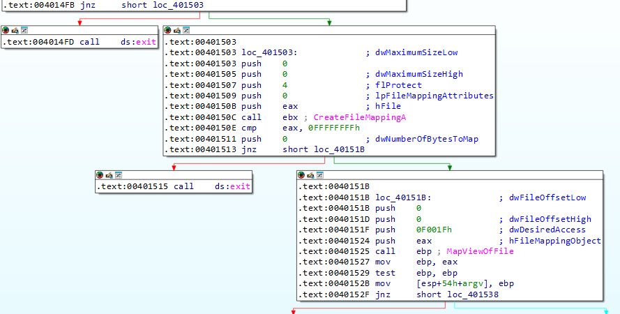
In the two boxes we can again see “CreateFileMappingA” followed by “MapViewOfFile”, but this time carried out on “Lab07-03.dll”. The handle to the mapping is then stored at the offset of “54h+argv” from the stack pointer, as we can see between loc_401527 and loc_40152B. The test instruction (equivalent to addition but without changing the actual value of what’s being added) at loc_401529 followed by the jump instruction at loc_40152F ensures that the return value of MapViewOfFile is not equal to zero/NULL, as that would indicate an error. If the test instruction results in anything other than zero, the program exits. Otherwise, it continues on.
The highest high-level overview so far
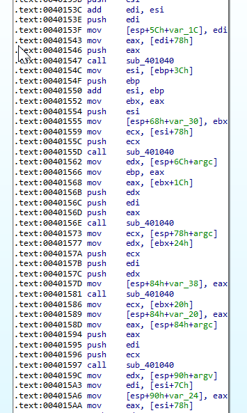
For the next several hundred lines, the Assembly code much to my sadness does not yield to detailed analysis. I had to reign in my urge to deeply understand the code here. We can see a snippet of this section on the left. There’s many mov, push, and add statements, with lots of stack variables. We see some calls to subroutines, but looking inside these subroutines there is much of the same as we see here already. We see references to argc and argv, and as we might remember the handles to the file mappings of “kernel32.dll” and “Lab07-03.dll” were saved in the stack at offsets related to argc and argv.
Based on this and based on what we see in other parts of this malware, we can assume that this part of the code manipulates the mappings of these two files. I have a feeling that the operating system would not allow us to change the important “kernel32.dll” file, however it should not have a problem with us changing our own “Lab07-03.dll”. Therefore, this leads me to assume that these file manipulations are related to manipulating “Lab07-03.dll” based on “kernel32.dll”, rather than the other way round. As “Lab07-03.dll” already contains some functionality, we can make a guess that it might have some more functionality added to it from “kernel32.dll”.
Finding the imposter
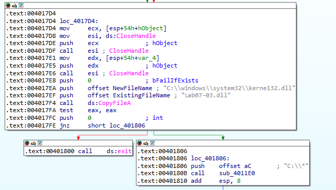Continuing on, we see the malware considerately closing the two handles to file mappings of “Lab07-03.dll” and “kernel32.dll”. This frees up some memory since those handles won’t be used anymore, but based on my quick google search, is not actually required. Noting this polite gesture, we can move on to the next function call that is “CopyFileA”. This function will copy an existing file to a new file. We can see that the existing file is our “Lab07-03.dll”, and the new file will be located inside “System32” and named “kerne132.dll”.
At this point we can guess that the malware is creating a file impersonating “kernel32.dll”, and that the previous operations on the file mapping of “kernel32.dll” were likely meant to copy its functionality over to “Lab07-03.dll” and then to “kerne132.dll” (I will keep the file name in italics to differentiate it from the original “kernel32.dll”). I’m unsure why the malware didn’t just copy it directly into “kerne132.dll”. Perhaps it’s due to “kerne132.dll” being in the System32 directory which might not allow file manipulation, but might allow file creation in some cases - I’m unsure. Either way, at this point we have a new file impersonating the original “kernel32.dll”.
The original “kernel32.dll” file is a library commonly used by various applications running on Windows, as it allows applications to use common Windows API functions such as memory management and input/output.
As mentioned at the very beginning of this analysis, the initial version of “Lab07-03.dll” before the .exe is run contains simple code that connects to a remote address and receives commands to execute. The counterfeit file “kerne132.dll” likely keeps this functionality while also adding the functionality of “kernel32.dll”. This would allow the counterfeit file to do everything that “kernel32.dll” can do, while also having the “feature” of connecting to and receiving commands from the attacker’s server. The counterfeit file likely has all of the functionality of “kernel32.dll” in order to successfully impersonate it and avoid detection. If the malicious DLL would simply contain the code to connect to a remote server and receive commands, and if that DLL would be made to execute on the machine through tricking applications into using it instead of the original kernel32.dll, it would quickly become clear that something is wrong, because applications would stop working. The applications might open the DLL and allow it to execute which would trigger the connection to the attacker’s server and receive commands, but the applications would subsequently crash as they haven’t been able to call the library functions that they rely on. “Kernel32.dll” is one of the most important libraries on Windows and plenty of applications rely on it. It’s possible that the malware would not even be able to connect to the remote server and receive commands without a working implementation of this library because it’s possible that some of the applications that handle that rely on the “kernel32.dll” functions - but that’s just a guess. Overall, it’s in the best interest of the malware to keep providing the “kernel32.dll” functionality.
At this point the malware has created the counterfeit file, but it’s not yet putting it to any use. The file is simply sitting in the System32 directory, and the original “kernel32.dll” is still used by applications on this system.
After the file creation, we can see the code calling a subroutine “sub_4011E0” with the arguments of “C:\*” (see loc_401806) and 0 (see loc_4017FC). Let’s step inside this subroutine to find out what the code does next.
The highest high-level overview in this lab
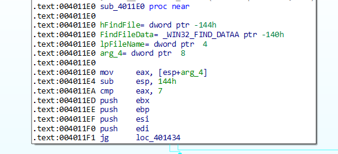At loc_4011EA we see that EAX (which points to one of the arguments, “arg_4”) is compared to 7, and if its value is greater then the subroutine will jump to the end at loc_4011F1 and terminate. This likely indicates that this subroutine is a recursive function that runs 8 times (8 times because we’re counting from 0 to 7 inclusively).
Therefore, “arg_4” appears to be the argument of “0” that was passed to this subroutine from the main function. We can see another argument at loc_4011E0 named “lpFileName”, and we can assume that this is equal to “C:\*”. We know that “arg_4” and “lpFileName” are arguments to this function, because their position in the stack is at a positive offset (8 and 4 bytes respectively - the green text to the right). We can also see “hFindFile” and “FindFileData” which are at negative offsets from the bottom of the stack, which indicates that those are local variables that will be used later on in the subroutine.
Scrolling through the code of this subroutine I started to give up my hope for the possibility of line-by-line analysis. The code here does a lot of what I can only vaguely describe as “arithmetic operations” - see an excerpt below:
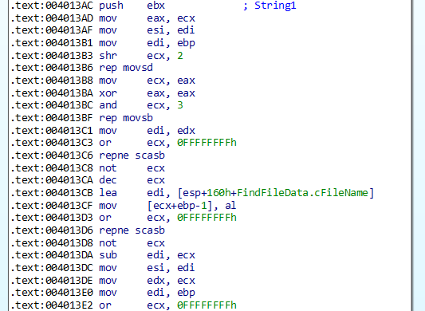
At this point we have a lot of contextual knowledge of what this malware will do - we know that it creates an imposter file of the common library “kernel32.dll” that can also connect to a remote server and receive commands. We know that it will need some way of putting this file to use, likely by convincing applications on the system to use it instead of the original DLL. Therefore, as we already have an idea of what the code will do, to avoid getting caught in an assembly rabbit hole we will only look at function calls and ASCII strings and see if that’s enough to understand the function of this subroutine.
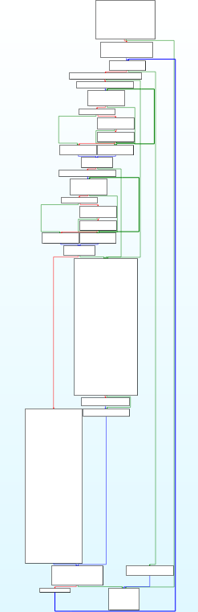
The graph of this subroutine (picture on the left) looks much more complicated than the main function, which is the final reason I needed to convince myself not to analyse every assembly instruction (as motivated as I am to learn assembly).
We can see that the graph is composed of many small blocks in the first half followed by two main big blocks in the second half.
Let’s begin our high-level analysis with the small blocks at the start of the subroutine. We will only look at code elements that contain either a function call or an ASCII string.
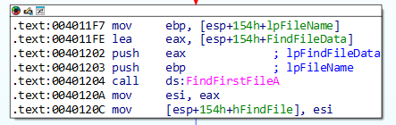
The first function we encounter is “FindFirstFileA” with the argument of “C:\*” (that’s “lpFileName” seen at loc_401203, which was one of the two arguments passed to this subroutine). Another argument is “FindFileData” which is empty at the moment, but the function will populate it with information about the found file after the function call. The function “FindFirstFileA” is intuitively named and we can guess that it will return information about the first file found in the “C:\” directory. The asterisk in “C:\*” is a wildcard character indicating that we’re looking for all files “*” that have a path of the format “C:\*”.
The information about the found file such as filename is stored inside “FindFileData”, however the function also returns a return value stored in EAX. This return value is the handle to the found file. At first, only “FindFileData” is used in the code that follows the function call to “FindFirstFileA”, likely because the “FindFileData” structure neatly organises all of the information about the found file. However, the file handle will come in handy at the very end of this subroutine. We can see that EAX which contains the file handle is copied into ESI, and then ESI is copied into a “hFindFile” variable. EAX and ESI will get overwritten with other variables, however the value of “hFindFile” will remain constant and it will contain the handle to the found file. We won’t need this knowledge until the very end of this subroutine.
The next piece of code I find is this block that loads a dot character into ESI:
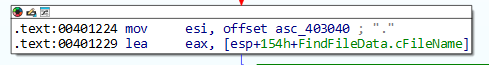
Looking around, it’s hard to immediately tell how this character will be used. We know that the code is currently trying to find a file in the directory, and finding files involves some additional processing. Perhaps the dot character is used to tell between the filename and extension. Unless we find any further evidence to the contrary, we can assume that it’s just used for string processing. There’s a similar block but with a double dot ASCII string (“..”) later on, and for now we assume the same.
We don’t see any other function calls or ASCII strings until we get to the first big block in the bottom half of the subroutine.
The first big block
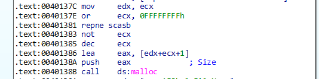In the first big block in this subroutine, we can see a call to malloc (a function that allocates memory) with EAX as the argument (the argument indicates the size of the memory to be allocated). However, there’s plenty of operations on EAX prior to it being pushed onto the stack, making it hard to tell what value it holds. Running the program in a debugger and pausing it at this point could help us determine the value of EAX. Similarly, it’s hard to tell what the return value of malloc (a pointer to the newly allocated memory) is used for. As we’re not sure whether this function call will be of importance, we can continue for now and see whether we can understand the program’s function without it.
At this point I was beginning to feel a little worried, because there were a few function calls and ASCII strings that I couldn’t make sense of without a more detailed analysis. I began to consider going back to the start of the subroutine and understanding everything in depth, just in case the dot character and the memory allocation were used for some nefarious purposes. However, as I already knew what the malware intended to do (force applications to use its own DLL in place of kernel32.dll), I was curious whether it would be possible to tell how it achieves this purpose from just skimming through the program like we did so far. Furthermore, the things that are unclear at the moment might make more sense once I have a general overview of the whole of the subroutine. Therefore, I have persevered.
We continue looking through this first big block of the subroutine until we come across an ASCII string of “.exe” being pushed onto the stack:
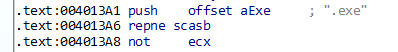
Since it’s pushed onto the stack, we can guess that it’s going to be an argument used in a function call. We scroll down and see the following function call soon after:
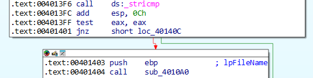
“_stricmp” is a function comparing two strings that returns 0 if the strings are equal.
At this point, we know that the malware is comparing the string of “.exe” with something else. If the strings are equal (so they are both “.exe”), then “test EAX, EAX” will return zero (because EAX holds the return value of the function which will be zero if strings are equal) and the program will follow the red arrow, move onto “push EBP” and then call another subroutine. We can also tell that the argument passed to the new subroutine is called “lpFileName” thanks to the helpful labeling from IDA (I’m guessing IDA knows that the argument is a filename, because inside the subroutine it will be used as an argument for some Windows function call that takes a filename as one of the arguments).
So what is the string that the malware compares with “.exe”? We know that the malware likely wants to make applications on this system use its own DLL rather than kernel32.dll. An application is a program with an extension of “.exe”. Therefore, it seems likely that the malware is looking for .exe files on the system. We can guess that the string that the malware compares with “.exe” is likely the file extension of the found file. This would support our theory that the ASCII character of a dot “.” from earlier is used for file path processing - possibly to separate the extension from the rest of the file path.
Another interesting piece of information is that right after finding a .exe file, the malware calls another subroutine with an argument of “lpFileName”. This argument is stored in EBP, and looking back at the code it’s hard to tell what value is stored in this register (again, a debugger could be used for this purpose). However, based on everything else we know, we can make an educated guess. The malware is looking for .exe files. Therefore, once it finds a .exe file, it likely wants to do something with this file that will happen in the newly called subroutine. To do something with a file, its file name is needed. Therefore, “lpFileName” is likely to be the file name of the found .exe file.
This might be an explanation for the use of “malloc” that we’ve seen earlier. If the program has two strings, one with a file extension and one with a file name, then at some point they must have been separated from the file path and likely given their own memory to be stored as separate strings. Or perhaps the file extension was cut out from the file path and stored as a new string, and the file path string was modified to only contain the file name. Regardless, we can make a guess that “malloc” was used to allocate memory for the purpose of storing separate string(s).
These assumptions of the purpose of both the dot “.” character and the “malloc” call are just an educated guess, and they might be wrong. However, the above explanation fits with our theory so far, so let’s continue with it unless we find something to the contrary.
The subroutine “sub_4010A0” which does *something* with the found executables will take us to another window, so for now let’s remain in the current subroutine and examine the rest of it.
At this point the first big block in the second half of the subroutine ends, and we move onto the second big block.
The second big block
The two blocks are not linked to each other - we can see in the subroutine graph from earlier that execution passes either through the first big block or through the second big block, but never through both. There must be some criteria that decides which of the two blocks gets executed, but we’re unsure of what that is at the moment.Inside the second big block we come across the first function call:
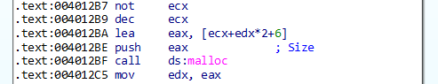
Again it’s a call to “malloc”, and again, it’s difficult to determine the value of the argument provided and the purpose of this function call. It’s likely that it’s used to store a string resulting from manipulating the filepath string, like in the first big block.
Continuing through the code, we come across the ASCII string of “\*” (IDA uses another backslash as an escape character), followed by a call to a subroutine approximately 20 lines later:
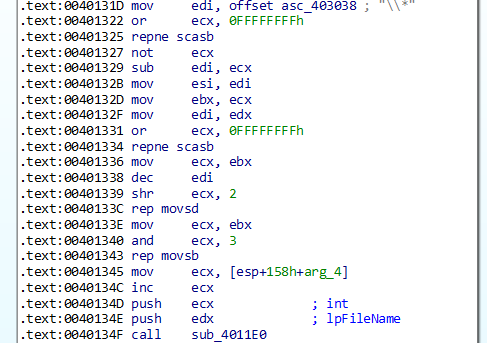
Let’s begin by considering the call to the subroutine. This is “sub_4011E0” - the subroutine we’re currently in, the subroutine that accepts a file path and a counter, the subroutine that searches for the first file within that file path. We’ve speculated previously that this subroutine is a recursive function because one of the arguments is a counter that is compared to 7 at the start, indicating that this subroutine runs 8 times (the counter goes from 0 to 7 inclusively). Here we can see at which point the recursion occurs. Let’s look at loc_401345: “arg_4” is the counter which was passed to this subroutine from the main function. As we might remember, the value of this counter was originally 0. Here, the counter is moved into ECX, and then at loc_40134C we can see “inc ECX” which increments the value of ECX by 1. This is where the counter counts up. Then ECX and EDX are pushed onto the stack as arguments, and this subroutine runs again (this will happen 7 times when the child subroutine reaches this point).
We should remember that the other argument to this subroutine was the file path within which the file search will be carried out. It’s hard to tell what the value of EDX is at the point it’s pushed onto the stack (loc_40134E), but we can venture a guess that it’s going to have something to do with “\*” that we saw at loc_40131D. We can’t simply search within “\”, and it wouldn’t make sense for this subroutine to first run with “C:\*” and then run with just “\” seven times. Then how does “\” come into the file path argument?
“\” is used within a file path to indicate the nesting of a file and directories. For example, in the file path “C:\Program Files\Steam\steam.exe”, the folder “Program Files” is located inside the C:\ drive, the folder “Steam” is nested inside the “Program Files” folder, and the executable “steam.exe” is inside the “Steam” folder. Folders can be nested within other folders. Based on this subroutine being recursive, searching for files, and referencing both “C:\*” and “\*”, we can make a guess that the recursion is related to nested folders, to ensure that we not only find the executables located directly in the C drive, but also within the folders on the C drive. The maximum counter value of 7 might indicate the maximum level of nesting (i.e. the highest nesting would be C:\folder1\folder2\folder3\folder4\folder5\folder6\folder7, and the program would look for executables inside “folder7” and each of the folders on the way). If that is the case, the second big block (the one we’re currently in) likely handles directories, and the first big block that we analysed previously handles separate files.
Therefore if, at the beginning of the program, the found file is a directory, then the execution will continue to the second big block and the subroutine will be called again with that directory being the file path argument. If the found file is an individual file, then the file extension will be compared against “.exe”, and if a match is found, the file name will be provided to a new subroutine sub_4010A0.
The above is our best guess based on skimming through the code and connecting together its key parts. A way to verify it for certain would be to run the malware in a sandbox and observe what files it attempts to open. If our guess is correct, the malware will open all files on the C drive and the folders contained within the drive up to the level of the 7th folder deep.
At the end of this subroutine
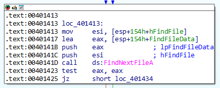At the very start of this subroutine, “FindFirstFileA” was used to find the first file within the C:\ directory - however, this was only a singular file. If the malware is to find all of the executables, surely it must find more than one file within each directory. Attentive readers might have wondered at which point those other files are found, and here is the answer:
As we might remember, at the start of the subroutine “FindFirstFileA” saved the information about the found file inside a structure, and it saved a file handle to the file inside a local variable “hFindFile”. We said that this file handle will not come in handy until the very end of the subroutine, and this is the time. The function “FindNextFileA” is called with the handle “hFindFile” passed as one of its arguments - passing the previously found file ensures that the next file is found, rather than the same file that has already been found.
“FindNextFileA” will find the next file and store the information about it in the “FindFileData” structure (similar to where “FindFirstFileA” stored its result). It’s not visible on the above image, but once “FindNextFileA” is called, the execution jumps back up to the start of this subroutine (to the point right after “FindFirstFileA” is called). Therefore, this is just a big loop that runs on repeat until eventually “FindNextFileA” returns an error indicating that no more files can be found and the subroutine exits. Since this subroutine is recursive and creates a child subroutine every time a directory is found, this loop that finds all the files will run on each nested directory found on the C drive, exiting each time no more files can be found within each directory.
This is all for this subroutine. Now, let’s look inside the subroutine “sub_4010A0” that does *something* with the found .exe files.
The .exe pipeline
In the previous section we have discovered that the program looks for executable files on the “C” drive and passes the found executables onto the subroutine “sub_4010A0”. Let’s examine what happens to the files inside the subroutine.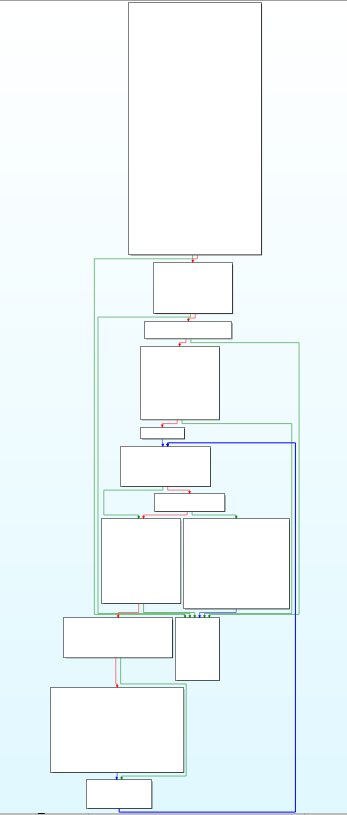
The graph of the subroutine (see above) is not particularly complicated, however we might not even need to spend time trying to understand what every block does. We already know that this subroutine will most likely do *something* to the found .exe files in order to force them to use its own malicious DLL “kerne132.dll” instead of the official “kernel32.dll”. As we did previously, let’s focus exclusively on function calls and references to ASCII strings and see if we can piece together what happens.
The subroutine begins with creating a file mapping of the .exe file, similar to how the main function mapped “kernel32.dll” and “kerne132.dll”. This will load the .exe file into memory and allow the malware to access and possibly modify it:
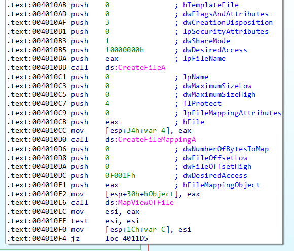
Later on, we see a call to “IsBadReadPtr”. This function verifies that the program has access to the part of memory that the pointer is referencing. As the malware is working with a file loaded in memory, and “MapViewOfFile” returns a pointer to the memory location where the file has been loaded, this might just be to check that the .exe file has been loaded successfully. Perhaps some .exe files found by the malware cannot be loaded by it into memory, so this is likely just used for error handling:
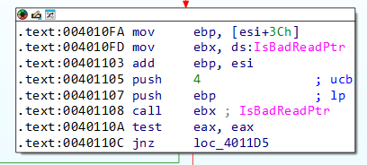
We can see a few more function calls that are likely used for error handling and dealing with files. It’s also possible that the malware is doing *something* with the .exe file here, but we don’t see any clear indications of what this might be:
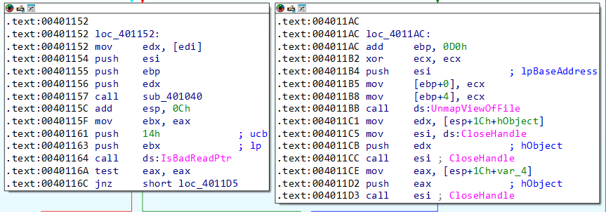
We keep going until we come across something more promising:
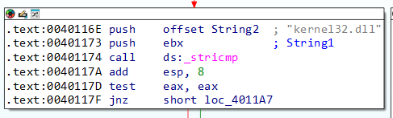
We see a call to “stricmp”, which will compare two strings and return 0 if they are equal. Based on the push instructions prior to the call, an unknown string stored in EBX will be compared to “kernel32.dll”.
As the malware has previously opened the .exe and mapped its contents to memory, we can assume that this malware is looking for a string of “kernel32.dll” inside the .exe code. Even though I’m tempted to understand how exactly the malware looks for the string - does it check every block of 12 characters? Does it check every word separated by a space? Does it only check some specific part of the file? - in the end, it’s not really relevant. In whatever way the strings from the .exe are extracted, in the end they are compared to “kernel32.dll”, and if the comparison returns true, the following code runs:
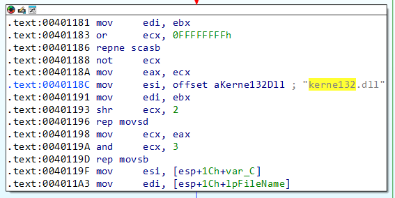
We see a reference to “kerne132.dll” at loc_40118C. We don’t see any function calls or other ASCII strings, but we see “repne scasb” and “rep movsb”. These instruction do the following:
“repne scasb”: In general, this instruction searches for the value stored in ESI within the string stored in EDI. The value in ECX is used as the counter which decreases by 1 with every next byte of EDI searched. The search continues until the value is found or ECX reaches 0.
In this case, “repne scasb” is used to search for a NULL character within the string stored in EBX (this is the string from the previous code block that was compared to “kernel32.dll”). We can see that at loc_401181 EBX is moved into EDI, which is the register that “repne scasb” uses to search within. ECX is set to the maximum value at loc_401183, which will ensure that “repne scasb” will not stop until the NULL character is found. Once the NULL character is found, the instructions “not ECX” and “shr ECX, 2” modify ECX so that it reflects how many times the counter was decremented until the NULL character was found.
Every string is terminated with a NULL character. Therefore, essentially, this “repne scasb” operation will find the length of the string stored in EBX, and the length will be saved in ECX.
The string stored in EBX is whatever was compared to “kernel32.dll” and returned true. Therefore, the string stored in EBX will always be “kernel32.dll”. Therefore its length will always be 12, which might make us wonder - why does the length have to be calculated every time instead of just being hardcoded? In truth, I’m not sure. Perhaps the higher-level language that the malware was coded in used something like “len(String1)” at this point rather than directly using the value of 12, which is common coding practice. Even so, why wouldn’t the compiler optimize the code by hardcoding the value if it’s always the same? I’m unsure.
“rep movsb”: In general, this instruction will copy bytes from ESI to EDI, with the number of bytes to copy stored in ECX.
In this case, we know that ECX stores the length of the “kernel32.dll” string as a result of “repne scasb”. At loc_401191 we can see that EDI will contain the value of EBX, and from loc_401173 (the previous code block) we know that EBX contains a string found inside the .exe file that is equal to “kernel32.dll”. At loc_40118C we can see that ESI is loaded with the value of “kerne132.dll”.
Therefore, at this point the found string of “kernel32.dll” inside the .exe will be overwritten with “kerne132.dll”.
Once the string of “kernel32.dll” is overwritten with the name of the imposter DLL, the code jumps back to the point soon after the file mapping of the .exe (see the dark blue arrow in the code graph below). Therefore, this appears to be a loop that is likely looking for all references to “kernel32.dll” inside the code of the .exe and then replacing each of them with “kerne132.dll”.

Conclusion
This analysis examined a malicious program that tricks every .exe on disk to load its own malicious version of a popular Windows DLL “kernel32.dll”. The malicious DLL connects to a remote server and receives commands which potentially allows an attacker to execute any command on an infected machine. The malware achieves this by recursively searching for every .exe file on the C drive, searching for all references to “kernel32.dll” in the found .exe files, and overwriting it with the name of the counterfeit DLL “kerne132.dll”. As the malicious DLL has copied over the functionality of the original “kernel32.dll”, the applications on the infected machine should continue to execute as normal.In practice, this malware appears to be quite straightforward in its approach and it doesn’t seem to employ any techniques to circumvent antivirus detection. Creating a new DLL in the System32 directory, mapping the original “kernel32.dll”, and having a DLL connect to some remote server all look to be quite noisy operations that should hopefully be detected and prevented by any antivirus program worth its salt. However, the malware’s straightforwardness makes it a good target for practicing Assembly analysis, while its relative complexity requires a big-picture approach at times which makes for good practice in identifying code elements that are the most fruitful for malware analysis.